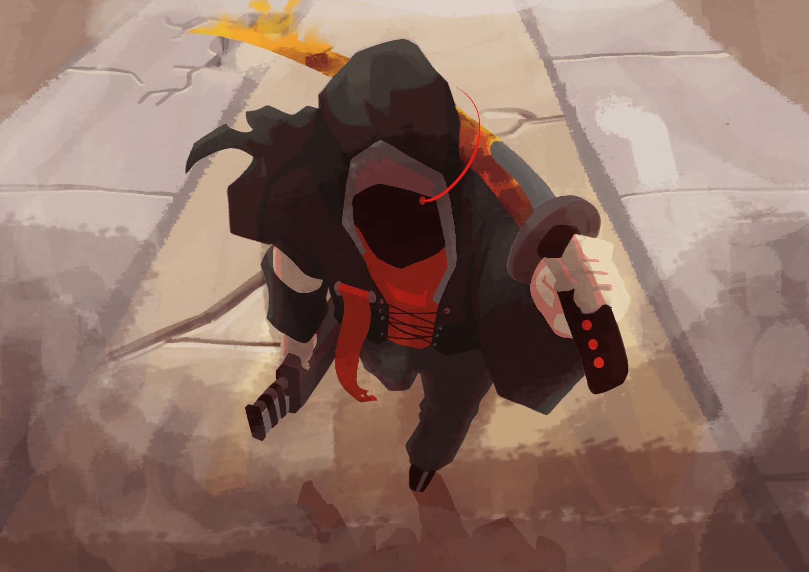

Nama: Muhammad Faisol Ilmi
NIM: 4125037
Kelas: A
Hobi: Beternak
html ini hanya untuk memenuhi tugas Pemograman Web Dasar. Tugas ini dibuat pada tanggal 1 Oktober, saat waktu luang.
Kegiatan Sehari-hari
- Kasih makan ternak
- Menyirami tanaman
- Bersih-bersih rumah
- Cuci baju
